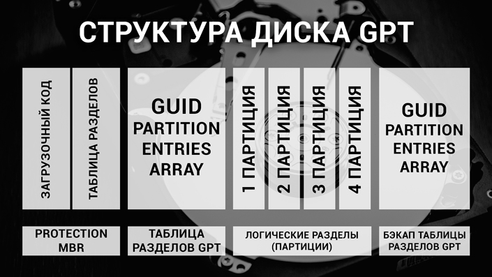

Fullscreen mode
Just press »F« on your keyboard to show your presentation in fullscreen mode. Press the »ESC« key to exit fullscreen mode.
Overview mode
Press "Esc" or "o" keys to toggle the overview mode on and off. While you're in this mode, you can still navigate between slides, as if you were at 1,000 feet above your presentation.
Unix
Lesson 1
Author: Egoshkin Danila Igorevich
Plan
- Rating System Evaluation (RSE) - РСО
- Family Linux<-Minix<-Unix & Windows (Windows NT)
- Partition Managers
- File systems
- MBR vs GPT
Rating System Evaluation (RSE) - РСО
1. Labs - 4 labs - 60-70 points (on time)
Lab1 ~ 15, Lab2 ~ 15, Lab3 ~ 20, Lab3 ~ 20
2. Control works - 2 works 10 and 20 points = 30 points
3. Bonus (karma): 5-10 point attendance and activity
Linux Distributions
https://en.wikipedia.org/wiki/Linux_distribution https://distrowatch.com/Partition Managers
Windows Disk Management Interface (Интерфейс управления дисками Windows)
Mini Tool Partition Wizard
GParted
File systems
(Windows: FAT32, NTFS;
Linux: ext, ext2, ext3, ext4)
What is a file
What was the first file system to store human data?
O_o?
Books

Punched tape

Magnet tape
Spectrum

Spectrum
Compact Disc, CD

Compact Disc, CD

Compact Disc, CD - FileSystems
ISO 9660 - 1988
Joliet
Rock Ridge
Amiga Rock Ridge Extensions
El Torito
Apple ISO9660 Extensions
HFS, HFS+
Universal Disk Format
Mount Rainier
ROM cartridge

ROM cartridge
HDD

SSD
We will not create our own file system!!! Realy??? (StarWars)

VFS - Virtual File Systems
Archives: 7z, Zip, Rar, tar, Bin, Arc
Games: nif, dat, ...
Othre: doc, docx, ...
Games: nif, dat, ...
Othre: doc, docx, ...

MBR vs GPT
MBR
GPT
On HHD do we write data from center to corner or from corner to center?
Speed
HHD - У жестких дисков и дискет первые цилиндры находятся на внешних дорожках, то есть от края к центру диска. В начала диска плотность секторов большая, соответственно и скорость выше, чем в конце.
CD - у них только одна спиральная дорожка, которая начинается от центра.
Cluster or Block (Unix)
Cluster or Block (Unix)
DataMining - Объединение нескольких однородных элементов, которое может рассматриваться как самостоятельная единица, обладающая определёнными свойствами.Cluster or Block (Unix)
Структура диска:
(A) дорожка
(B) геометрический сектор
(C) сектор дорожки
(D) кластер
How to erase data from disk?
HDD - Why there is no one magnetic vault in Banks and Casinos?
HDD is Ferromagnetic